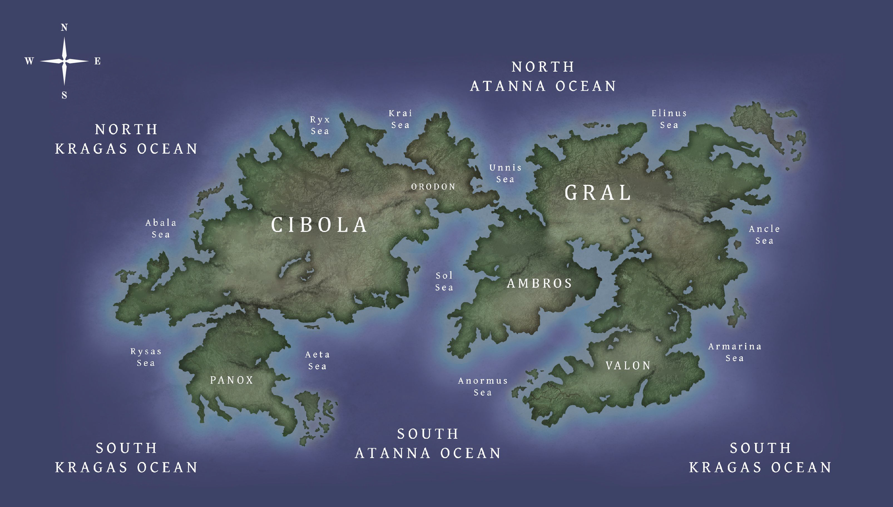

The Story
Thousands of years have passed and humans have developed interplanetary travel to visit planets far from our own solar system. Perdita A, a star hidden behind much brighter stars in its constellation, has been discovered by an observatory probe. In Perdita A’s orbit are several planets, one of which is the terrestrial planet named “Perdita c”, more commonly known as “Planet Perditus”. Humans have found this planet suitable for life and consider colonizing the planet to mine its resources. An organization of biologists, ecologists, and environmentalists formed an astrobiological conservation program with the goal of protecting alien lifeforms from any harmful interactions. The conservationist committee has determined to analyze the planet with a satellite named “Trawler-IV”, which wields a supercomputer that can run simulations on the existing life forms and visualize their possible evolutionary forms by the time humans finally arrive.
The Satellite:
Trawler-IV, chain code: 18721876, is a large interplanetary satellite used to observe the surface of planets and survey alien ecosystems. The satellite relies on small probes called “dredgers” that are launched onto the planet’s surface to ferry lifeforms and resources back to the satellite’s hull. In addition, the Trawler-IV can produce a human avatar called an “astral body” that can be transported to the planet’s surface to be controlled by researchers, simulating real time tactile and physical stimuli.
The Solar System
Although the Project is mainly concerned with understanding and conserving life on Planet Perditus, it is still important to study the solar system which the planet belongs to. Obtaining additional information about the planet in this context will add data that can be used to study how life on Perditus began.
Figure-1. Diagram of the Solar System. There are five planets that orbit the K-type main sequence star Perditus A. The closest planet orbiting the star is Perditus b (Antigonus) and it has a boiling core and no atmosphere. Approximatly 48.42 million miles away from Perditus b is Perditus c (Planet Perditus) which contains a habitable surface and atmosphere. Perditus d (Hermione) lacks many layers to its atmosphere and contains a cooler core compared to perditus c. Far from the latter two planets, aproximatly 387.35 million miles is the gas giant perditus e (Polixenes). Perditus f (Autolycus) is a terrestrial planet that lacks an atmosphere and does not possess a heated core. *Note that the distances are not entirly relative and unlabeled distances are much larger then they appear.
Main Sequence Star:
Planet Perditus orbits a K-type main-sequence star, also known as a K dwarf or orange dwarf star. The star is named “Perditus A” and measures 0.5 times the size of Earth’s star. Like other K-type stars, Perditus A emits stable rays of light and far less ultraviolet radiation.
Planet Perditus
The word “perditus” means “lost”. Perditus c inherits its name from its dim host star but also from the fact that the planet itself was overlooked in the star’s own orbit. The planet is considered to be an Earth analog as it shares many attributes with Earth. Most notably is its size, density, surface water, hydrogen cycle, and biosphere. The planet is slightly larger than Earth and is orbited by two moons. There is a large source of iron and other metal deposits found on the planet's surface, making Perditus c a high priority for mining metals and other untapped resources. What is most intriguing are the bioisignatures located within the planet’s oceans. Complex life has recently evolved, and it is important to study these organisms as a way of furthering our understanding of evolution and astrobiology.
Moons:
Perditus c possesses two moons which orbit closely around it. Both moons are similar in shape to one another. The larger moon named “Florizel” measures 3239 km (2012.6 mi) and the smaller “Camillo” measures around 22.6 km (14 mi). Having two natural satellites creates interesting dynamics with oceanic tides. Early in planet’s lifetime the high and low tides would be hardly indistinguishable. However, as the moons orbit more irregularly over time this will cause sizable changes in waves and will increase the frequency of high and low tides. Orbiting patterns have a profound effect on the oceanic life inhabiting the planet which rely on the tides for navigation or breeding. It is suggested that the moons formed later in the planet’s life span, and the presence of large craters on the planet’s surface implies that at one point several other moons may have crashed into the planet.
Geography
The surface of the planet has yet to be completely explored, although probe expeditions are commencing. Satellite images of the planet display six main landmasses and two large oceans. The ocean is divided into two primary basins named the Kragas and the Atanna. There are three landmasses located in the Western Hemisphere, the large continent of Cibola situated in the middle, an adjacent continent named Orodo, and the continent named Panox in the South. The two hemispheres are connected by a land bridge during low tide events. In the Eastern Hemisphere there are another three landmasses, the continent of Ambros, the large adjacent continent of Gral, and the southern continent of Valon.
Figure-2. Map of the Surface of Planet Perditus. Above is a map created using images generated by Trawler-IV. This map illustrates and labels the oceans, continental landmasses, and alludes to some topographical features. As probes are continually sent to survey the planet’s surface, the map will update with more accurate geographical information.